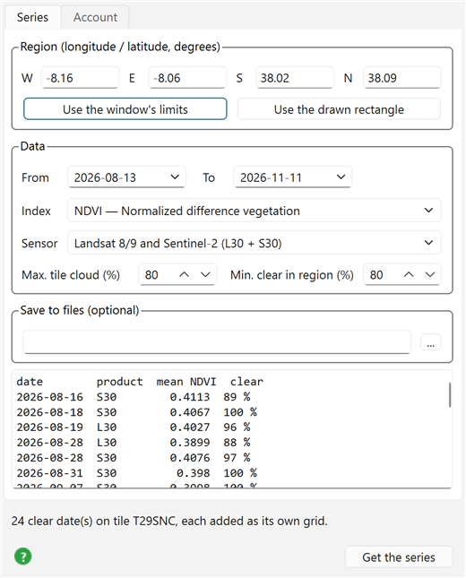
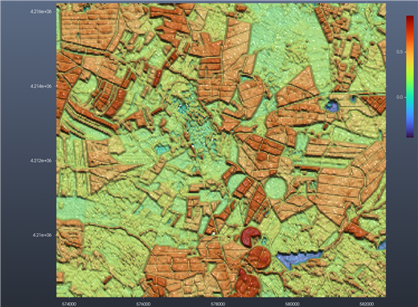
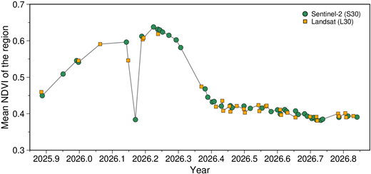

Tutorial: HLS time series
Satellite → Remote sensing → HLS time series… — the Tutorial button at the bottom of the dialog opens this page; the green ? beside it opens the reference for every field, the HLS time series page.
This tutorial follows the vegetation of a block of farmland through the seasons, using Landsat and Sentinel-2 together. The place is the irrigated farmland around Ferreira do Alentejo, in southern Portugal: dry-farmed cereals and pastures beside fields watered by centre pivots, which makes the difference between the two kinds of field easy to see.
What you need: a free NASA Earthdata account. Open the dialog's Account tab, type the login and the password, and press Save login — once, ever: the same login serves the MODIS scenes and SWOT dialogs too.
Example 1 — The last three months, every clear date as a grid
Open Satellite → Remote sensing → HLS time series… on an empty window.
Region: W −8.16, E −8.06, S 38.02, N 38.09 (about 9 × 8 km). Keep the default period (the last 90 days), Index NDVI, Sensor Landsat 8/9 and Sentinel-2, and the two cloud limits at 80 %.

Press Get the series. A progress bar follows the work: the search (NASA's catalogue found the region on MGRS tile T29SNC), the cloud masks of every date, then the red and NIR bands of the dates that are clear. Here it took about a minute.

24 dates out of the 90 days were at least 80 % clear over the region, a mix of Sentinel-2 (S30) and Landsat (L30) — a clear look every 3 to 4 days. Each one is listed with the mean NDVI of the region and how much of it was clear.
Every date is now a grid in the window, named like NDVI 2026-11-04 S30 — HLS T29SNC, in Scene Objects; the last date is the one showing. Tick another one to see it instead.

The map is in the tile's own UTM coordinates (metres), 30 m pixels. The dark red disks are centre-pivot fields, still green at the start of November, so most likely watered; the field mosaic in orange and green is irrigated and dry-farmed land in between; the blue patches (NDVI below 0) are farm reservoirs. Pixels a date's cloud mask flagged are left empty (NaN).
Example 2 — A whole year, and what the curve says
Change From to 2025-11-01 and To to 2026-11-10 and press Get the series again. The catalogue has 165 HLS scenes over the region in that year, cloudy or not; 73 of them were clear enough (41 Sentinel-2, 32 Landsat), read in about 2.5 minutes. Their means, drawn against time:

- November to March: the autumn rains green the pastures and the winter cereals; NDVI climbs from 0.45 to its peak, 0.64, at the end of March.
- April and May: the cereals ripen and are harvested, the pastures dry: NDVI falls from 0.58 in late April to 0.42 by early June.
- June to November: a long, flat 0.38–0.44. The dry-farmed land is bare or straw; what keeps the mean up is the irrigated fields — compare a centre pivot with its neighbours in any summer date of Example 1.
- The dip on 4 March (0.38): one Sentinel-2 date far below the dates either side of it (0.60 and 0.61), although its cloud mask called the region 100 % clear. No crop changes that much in a week: most likely thin cloud or haze the mask missed. Compare that date's grid with its neighbours'. Leaving such a date out is the analyst's call; the dialog keeps every date the mask accepts.
Landsat and Sentinel-2 points fall on the same curve: that is what harmonized buys — the two sensors' bands are adjusted to each other, so their dates can be mixed in one series.
Keeping the results
Give a file name under Save to files, e.g. D:/hls/ferreira.nc, and run again. Its folder receives one GeoTIFF per date (ferreira_20260404_S30.tif, …), all dates in one cube (ferreira_cube.nc, opened in the window with a slider to step through the dates), and ferreira_series.csv: date, satellite, mean, clear share — the numbers behind the plot above, ready for a spreadsheet.
The plot itself was drawn from Julia with the function the dialog runs:
using InteractiveGMT.RemoteS, GMT
S = hls_series([-8.16, -8.06, 38.02, 38.09]; from = "2025-11-01", to = "2026-11-10", index = "NDVI")
s2 = S.product .== "S30"
x = yeardecimal.(S.time)
basemap(region = (2025.85, 2026.88, 0.3, 0.7), figsize = (14, 6), frame = (axes = :WSen,),
xaxis = (annot = 0.1, label = "Year"), yaxis = (annot = 0.1, label = "Mean NDVI of the region"))
plot!(x, S.mean, pen = (0.75, :gray50))
plot!(x[s2], S.mean[s2], marker = :circle, ms = 0.2, fill = :seagreen, label = "Sentinel-2 (S30)")
plot!(x[.!s2], S.mean[.!s2], marker = :square, ms = 0.2, fill = :orange, label = "Landsat (L30)",
legend = (pos = :TR, box = :none), show = true)Try next
- Ten times the pixels: set Sensor to Sentinel-2 L2A, 10 m (Earth Search, no login) and run Example 1 again. The same fields at 10 m instead of 30 m (no account needed): nine pixels where HLS has one, so small fields and their edges come out.
- One field only: Draw → Rectangle over a single centre pivot in the window, then Use the drawn rectangle and Get the series. Its curve stays high all summer, unlike the region's.
- NDMI (water in the leaves) over the same year: it drops as soon as a crop goes short of water, so the watered fields should stand apart from the rest through the summer.
- NDWI on the reservoirs: follow their water area through the summer as they are drawn down.
- Sentinel-2 only with NDREI1: the red-edge bands Landsat lacks, more sensitive to chlorophyll late in the season.